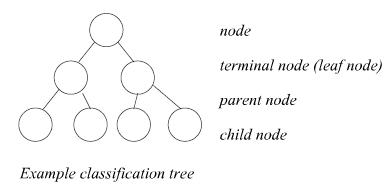
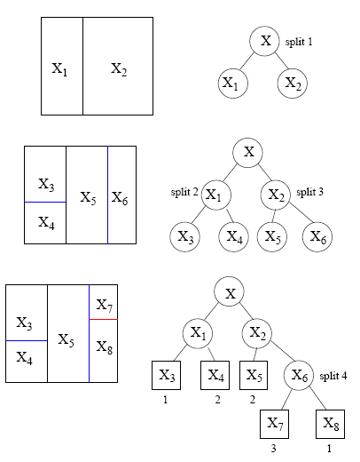
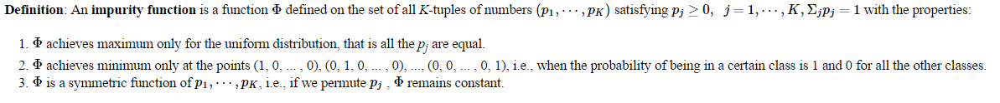
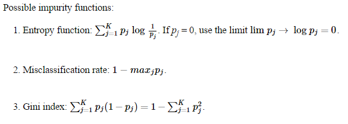
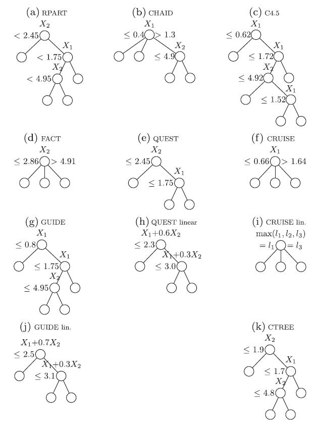

Knowledge base for Decision Tree
Sources:
Classification and regression tree (CART)
- Help detmine the most "important" (based on explanatoy power) variables in a particular dataset, and can help craft a potent explanatory model.
- It can statistically demonstrate which factors are particularly important in a model or relationship in terms of explanatory power and variance. This process is mathematically identical to certain regression methods, but presents the dta in a way that is easily interpreted by those not well versed in satistical analysis. In this way, CART presents a sophisticated snapshot of the relationship of variables in the data and can be used as a first step in constructing an informative model or a final visualization of important associations.
- The benefit of CART is to visually bridge interpretation and statistical rigor and faciliate relevant and valid model design.
- Initially presented in the book 1
purity criterion
- The graphic is the domain of all factors associated with Y in decending order of importance
- In traditional regression modells, linear or polynomial, a single equation (model) is devloped to represent the entire data set.
- CART use recursive partitioning to create a tree where each node
- 
- 
- Construction procedure:
- The selection of the splits, i.e., how do we decide which node (region) to split and how to split it?
- If we know how to make splits or 'grow' the tree, how do we decide when to declare a node terminal and stop splitting?
- We have to assign each terminal node to a class. How do we assign these class labels?
- 
- 
Estimate the Posterior Probabilities of Classes in Each Node
Determining Stopping Criteria
Automatic Interaction Detection (AID)Einhorn(1972) shows AID can severly overfit dataTHeta Automatic Interaction Detection (THAID)Doyle(1973) pointed out if two or more variables are highly correlated, at most one may appear in the tree structureClassification And Regression Trees (CART), it follows the same greedy search approach as AID and THAID. Instead of using stopping rules, it grows a large tree and then prunes the tree to a size that has the lowest cross-validation estimate of error. To deal with missing data values at a node, CART uses a series of "surrogate" splits, which are splits on alternate variables that substitute for the preferred split when the latter is inapplicable because of missing value.Surrogate splits are also used to provide an importance score for each X variable.CHi-squared Automatic Intreraction Detector (CHAID)employs an approach similar to stepwise regression for split selection. CHAID recognizes three variable types: categorical, ordered without missing values and ordered with missing valuesC4.5(Quinlan, 1993) is an extension of theID3(Quinlan, 1986). If X has m distinct values in a node, C4.5 splits the latter into m children nodes, with one child node for each value. If X is ordered, the node is split into two children nodes in the usual form “X < c”. C4.5 employs an entropy-based measure of node impurity called gain ratio.Although C4.5 takes almost no time on categorical variable splits, the strategy has the drawback that if X has many categorical values, a split on X may produce children nodes with so few observations in each that no further splitting is possible—see Loh (2008a) for an example. C4.5 trees are pruned with a heuristic formula instead of cross-validation. Empirical evidence shows that C4.5 possesses excellent speed and good prediction accuracy, but its trees are often substantially larger than those of other methods (Lim et al., 2000; Loh, 2009).Unbiased and Efficient Statistical Tree (QUEST)removes the bias by using F -tests on ordered variables and contingency table chi-squared tests on categorical variables. To produce binary splits when the number of classes is greater than 2, QUEST merges the classes into two superclasses in each node before carrying out the significance tests. If the selected X variable is ordered, the split point is obtained by either exhaustive search or quadratic discriminant analysis. Otherwise, if the variable is categorical, its values are transformed first to the largest linear discriminant coordinate. Thus, QUEST has a substantial computational advantage over CART when there are categorical variables with many values. Linear combination splits are obtained by applying LDA to the two superclasses. The trees are pruned as in CART.- CART always yields binary trees, CHAID and C4.5 can split a node into more than two children nodes
Generalized, Unbiased, Interaction Detection and Estimation (GUIDE)Condtional Inference Trees (CTREE)is another algorithm with unbiased variable selectionComoparsion on iris data

1. Breiman JH, L. Olshen, RA Friedman, and Charles J. Stone, _Classi cation and ↩
Regression Trees_, Wadsworth International Group (1984).